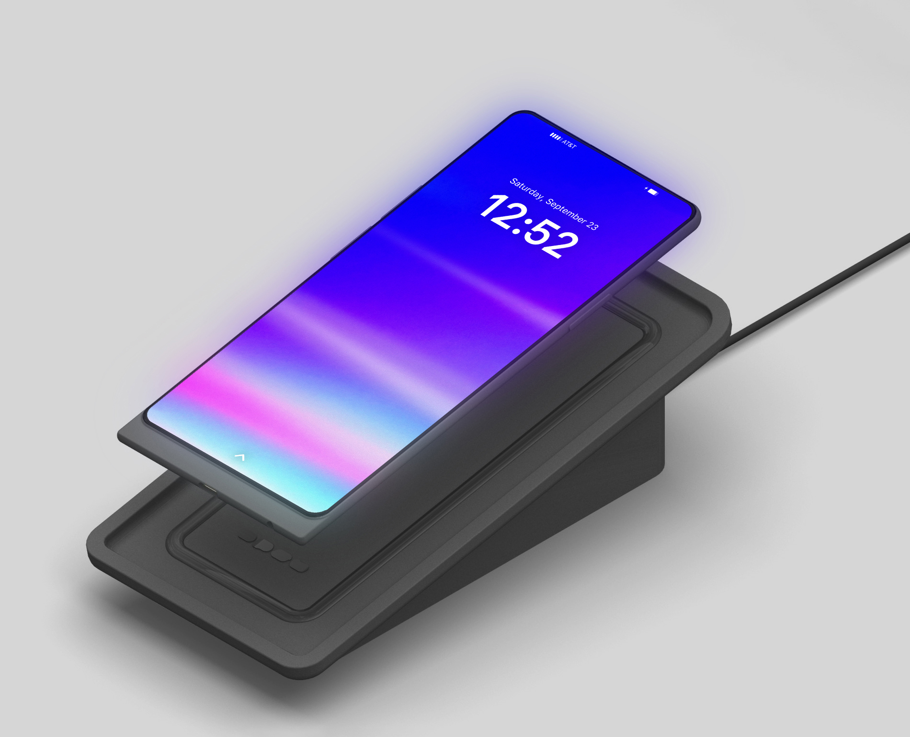
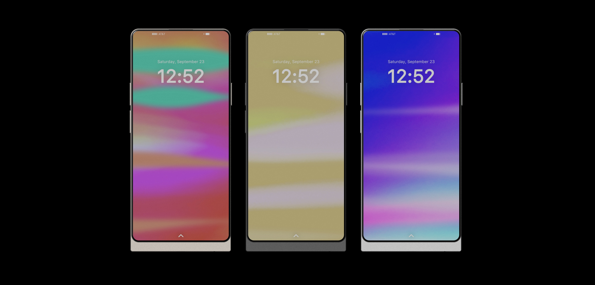
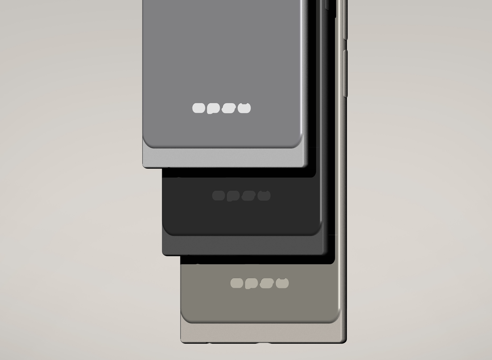
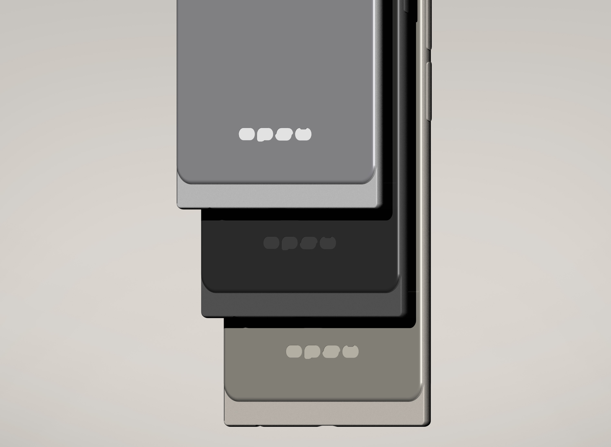
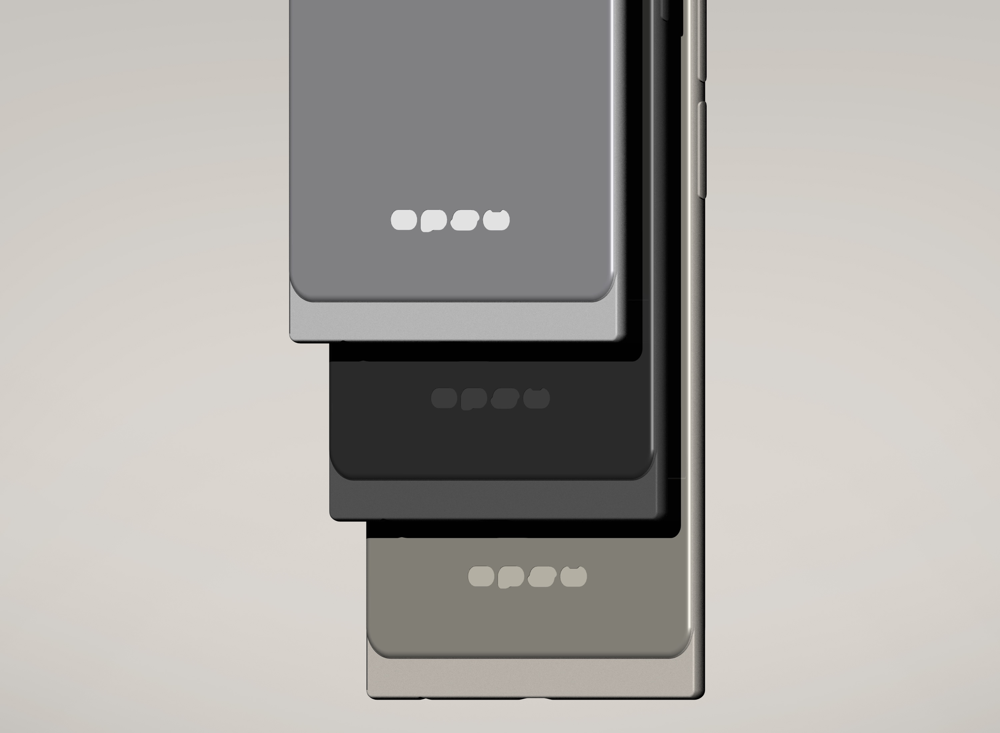

OPSU is a hardware and software ecosystem design. The project conceptualizes my take on mobile phones and user interface.

 

OPSU is a hardware and software ecosystem design. The project conceptualizes my take on mobile phones and user interface.
The OS design flattens the user interface and protagonize gestures. It sows a language from the logo all the way to the accessory design.
